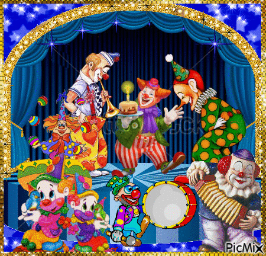

Kovalchuk Tymofii
Link do poczty
Link do ściągania pliku
Link początek tekstu
Link do środka tekstu
Link do końca tekstu
Link do strony z tabelą
Link do strony z formularzem

Tymofii
Tymofii
Tymofii
Tymofii
Tymofii
Tymofii
Tymofii
Kovalchuk
Kovalchuk
Kovalchuk
Kovalchuk
Kovalchuk
Kovalchuk
;) uśmiech z przymrużeniem oka
:P pokazanie języka
:D szeroki uśmiech
:( duży smutek
:O zdziwienie
:' ( płacz
82-200 Malbork 58
Ulubiony aktor: Saul Goodman
Ulubiony zespół muzyczny: Attila
Data urodzenia: cos tam 2010
HZ504
H2SO4
x*x=x2
,
Nazwisko ucznia Imię ucznia
Kovalchuk Tymofii